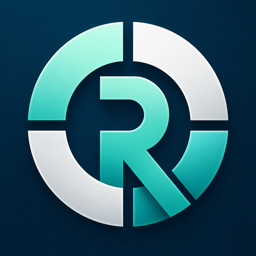

2026 tot heden
Electro Contractors, Waregem
ICT Field Engineer
Ervaring opdoen in een technische werkomgeving op locatie, met aandacht voor praktisch werken en het stapsgewijs analyseren van problemen.
Technologie. Business. Mensen.
Ongeveer vier jaar B2B softwaresupport heeft mij geleerd zakelijke klanten te begrijpen, gericht door te vragen en complexe software helder uit te leggen. Die basis neem ik mee naar sales, accountmanagement en commerciële technologie.
Profiel
Ik ben Florian. In softwaresupport werkte ik met zakelijke gebruikers die duidelijkheid nodig hadden: wat loopt er mis, wat is er nodig en hoe kunnen ze verder? Ik leerde hun situatie onderzoeken en productkennis vertalen naar uitleg waar ze mee aan de slag konden.
Dat werk vraagt meer dan technische kennis. Goed luisteren, verwachtingen afstemmen en vragen blijven opvolgen zijn essentieel om vertrouwen op te bouwen. Juist die combinatie van klanten begrijpen en oplossingen uitleggen neem ik mee naar een commerciële functie.
Met Roundfair en mijn technische projecten neem ik ook zelf initiatief. Ik onderzoek een behoefte, maak keuzes en werk aan een bruikbare oplossing. Zo blijf ik leren over technologie, producten en de mensen die ze gebruiken.
Ervaring
Mijn basis: professioneel klantcontact, software begrijpelijk maken en verantwoordelijkheid nemen voor de opvolging van vragen.
2026 tot heden
Electro Contractors, Waregem
Ervaring opdoen in een technische werkomgeving op locatie, met aandacht voor praktisch werken en het stapsgewijs analyseren van problemen.
Nov 2022 tot 2026
Cyncly (Compusoft)
Aanspreekpunt voor zakelijke klanten met softwarevragen. Doorvragen over hun werkwijze en het probleem om te begrijpen wat zij nodig hadden om verder te kunnen.
2019 tot 2022
Wit-Gele Kruis Oost-Vlaanderen
Tablets configureren en uitrollen voor verpleegkundigen, toestellen koppelen aan het centrale systeem en de hardwarevoorraad beheren. Een praktische basis in gebruikers ondersteunen en zorgvuldig met middelen omgaan.
2019
Vanaudenaerde, Oudenaarde
Praktijkervaring met verwarmingsinstallaties, zonnepanelen en elektrische voorzieningen. De start van mijn technische achtergrond en mijn interesse in hoe systemen werken.
Sterktes
Vaardigheden die ik in softwaresupport toepaste en in eigen projecten verder ontwikkel. Ze vormen een concrete basis om het commerciële vak te leren.
Professioneel communiceren met zakelijke gebruikers: luisteren, gerichte vragen stellen en uitleg afstemmen op hun technische kennis.
De werkwijze en context achter een softwarevraag onderzoeken, zodat een oplossing aansluit op wat de klant nodig heeft.
Productkennis gebruiken om ingewikkelde software begrijpelijk te maken en de klant door praktische vervolgstappen te begeleiden.
Vragen documenteren, prioriteiten bewaken en opvolgen tot er een duidelijk antwoord is.
Vertrouwen opbouwen door te luisteren, verwachtingen af te stemmen en klanten op de hoogte te houden.
Interesse in hoe producten waarde creëren, waarom klanten kiezen en hoe een bedrijf daarop verder bouwt.
Technische basis
Werk
Roundfair brengt mijn interesse in gebruikers, producten en technologie samen. Mijn homelab ondersteunt dat met praktische zelfstudie en probleemoplossing.

Roundfair
Eigen product, iOS appRoundfair vertrekt van een dagelijks probleem: in een groep is het niet altijd duidelijk wie het laatste rondje betaalde of hoe gedeelde kosten verdeeld zijn. Ik bouw een iOS app die dat overzicht eenvoudiger maakt.
Ik neem verantwoordelijkheid voor het hele product, van probleem en concept tot merk, ontwerp en ontwikkeling.
UniFi / VLANs / DNS
Een UniFi thuisnetwerk met aparte VLANs voor eigen apparaten, gasten en IoT. Zelf behoeften vertalen naar een opzet en het beheer opnemen.
Proxmox / Linux / Docker
Proxmox, Linux en Docker als leeromgeving. Systemen testen, fouten onderzoeken en oplossingen uitproberen om mijn technische inzicht te verdiepen.
Tailscale / Home Assistant
Toegang op afstand met Tailscale en automatisering met Home Assistant. Praktische oplossingen bouwen vanuit dagelijks gebruik.
Ambitie
Op het kruispunt van technologie, klanten en business.
Mijn volgende stap ligt in een commerciële rol waarin klantcommunicatie en productkennis samenkomen. De focus: B2B sales en accountmanagement, business development of FinTech en commerciële technologie.
Ik zoek een passende instap met ruimte om salesvaardigheden te ontwikkelen en door te groeien in klantverantwoordelijkheid. Customer success past wanneer er duidelijke commerciële verantwoordelijkheid bij hoort.
Klantbehoeften begrijpen, productwaarde uitleggen en verantwoordelijkheid voor relaties opbouwen.
Nieuwe klantgesprekken openen, behoeften verkennen en passende zakelijke kansen leren herkennen.
Technische producten begrijpelijk maken voor zakelijke klanten, ook binnen financiële technologie.
Contact
Zoek je iemand met ervaring met zakelijke klanten, productkennis en technisch inzicht? Ik maak graag kennis over een passende volgende stap in B2B sales, accountmanagement, business development of FinTech.
Connecteer op LinkedInOudenaarde, België